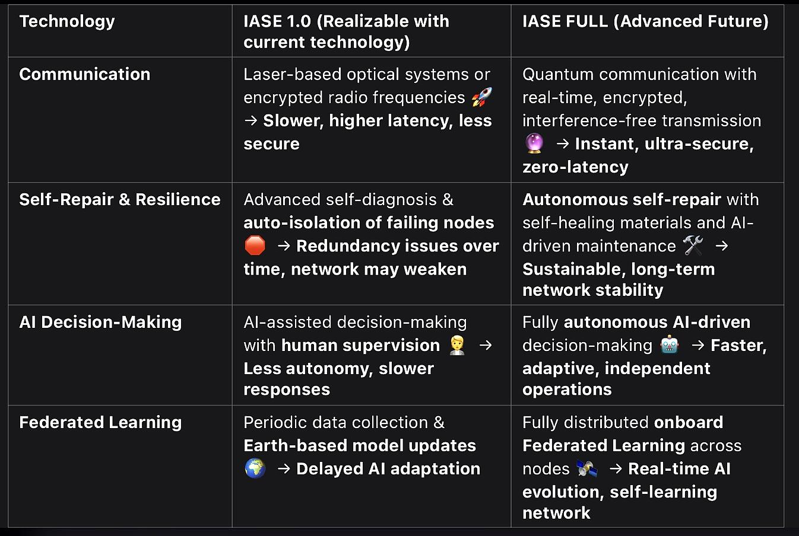

IASE Core Technologies
The IASE model is built upon advanced technological concepts designed to enable true autonomous AI operation in deep space. These include:
-
Federated Learning: Each IASE unit trains independently and shares learning models without transmitting raw data.
-
Quantum Communication: To ensure long-distance, secure data exchange between space entities and Earth.
-
Redundant AI Structures: AI is distributed across multiple fallback layers, ensuring mission continuity in case of failure.
-
Self-healing Mechanisms: Hardware and software components designed to self-repair or switch to backups if anomalies are detected.
-
Autonomous Navigation & Decision-Making: Each IASE unit can explore, analyze, and make decisions in real-time without human intervention.
IASE 1.0 vs Full Version
A functional prototype of IASE (Version 1.0) could be built today using available technologies. While it would lack some advanced features like full quantum channels, it could already operate as an intelligent decentralized node.

The comparison outlines the differences between a feasible version today and the ideal vision of IASE in the near future.
Applications of IASE
The IASE architecture enables a wide range of mission-critical and intelligent operations within autonomous space systems and distributed infrastructures.
-
Autonomous Space Exploration: Deployable AI agents capable of navigating, mapping, and making decisions in unknown environments.
-
Quantum-Secured Communication: Integration with quantum key systems for high-security orbital communication between AI nodes.
-
Multi-Agent Collaboration: IASE entities operate as coordinated fleets, dynamically exchanging data and reconfiguring their behavior.
-
Web3-Enabled Infrastructure: Token-based interaction models for participatory governance and decentralized incentive structures.
-
Self-Healing and Fault Tolerance: Distributed resilience and adaptive reconfiguration in case of failure or environmental hazards.
-
Deep-Space Autonomy: Reduced reliance on Earth-based control for long-duration missions.
-
Payload Management & Decision Support: AI-assisted operation and optimization of onboard scientific instruments.